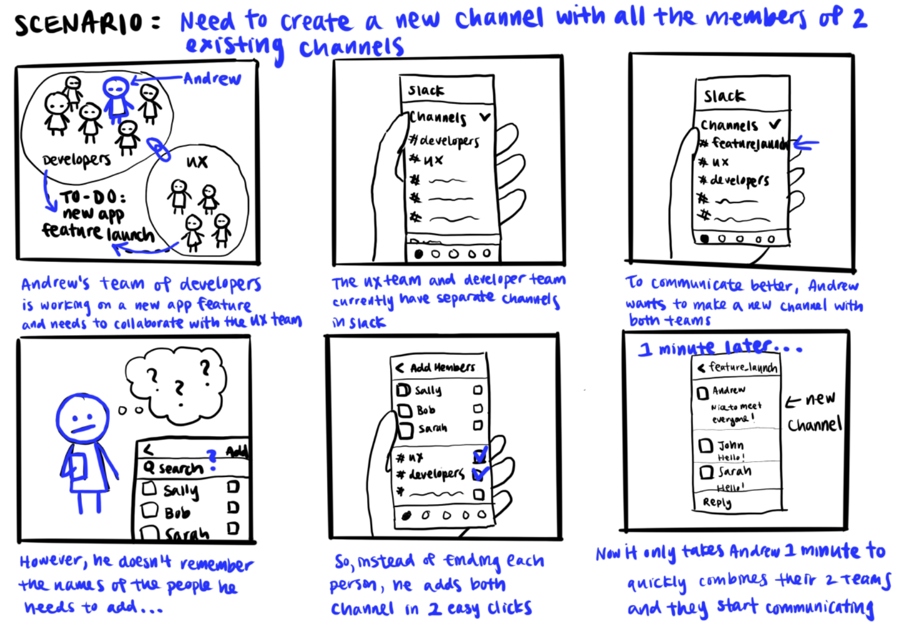
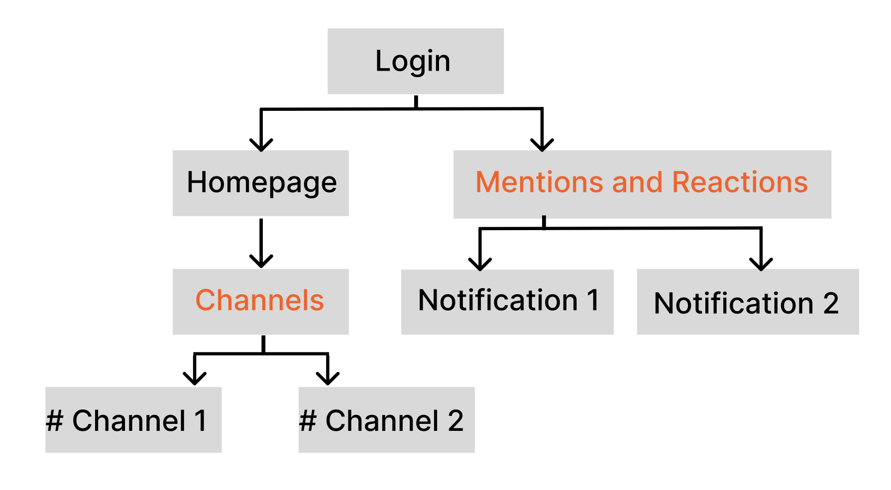
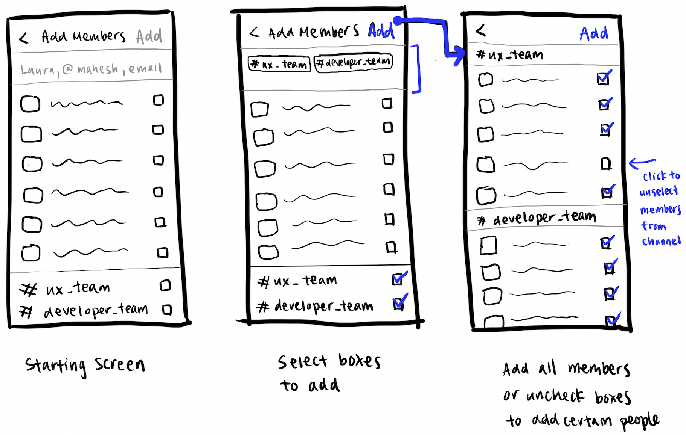
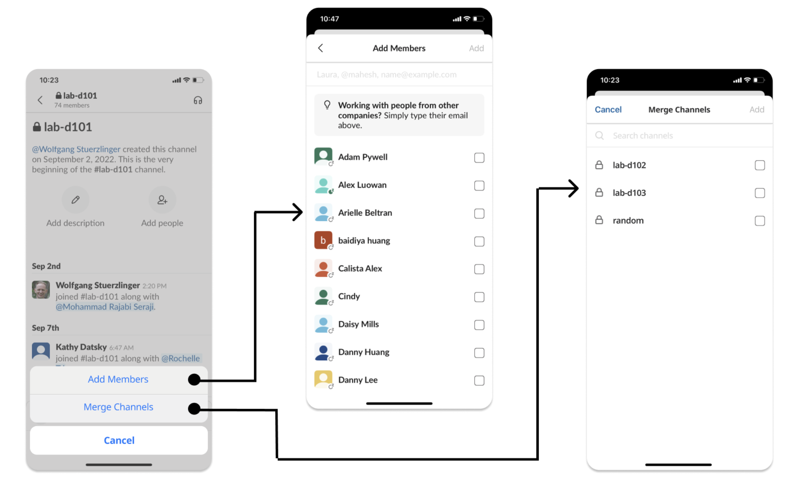
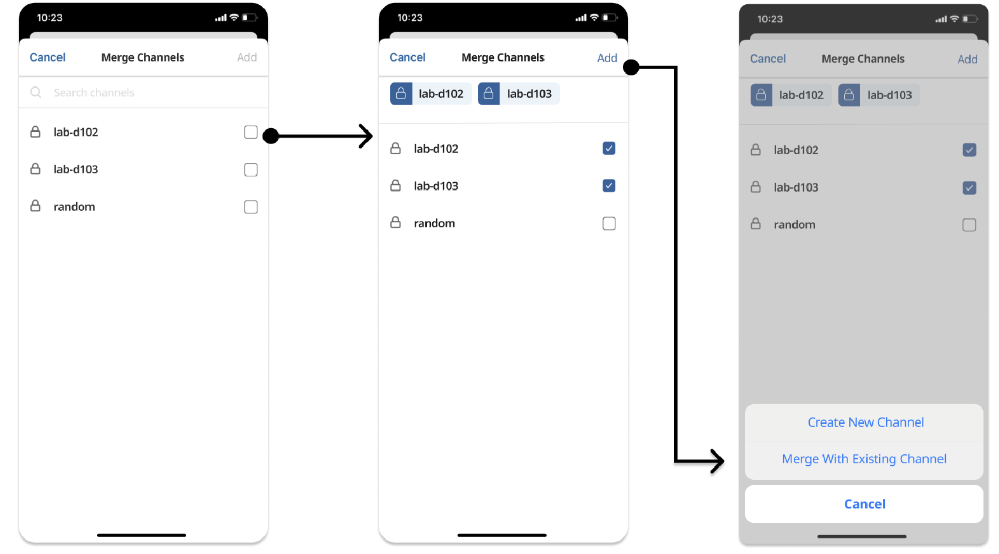
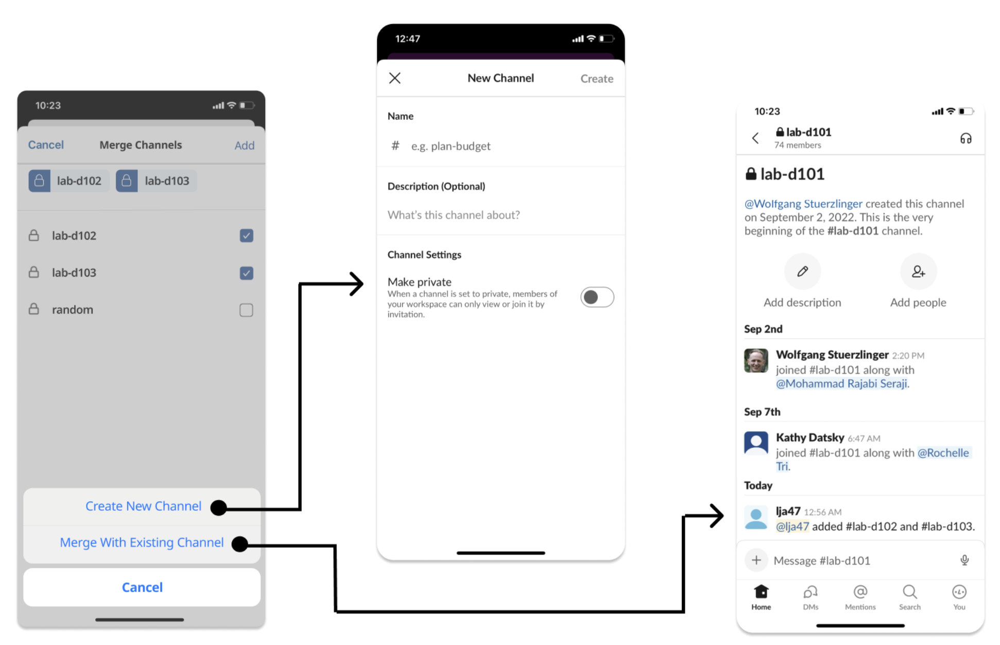

Slack is used by many tech industry professionals to collaborate with their coworkers, however the collaborations between multiple teams can be tedious when having to manually add a long list of team members.
Creating a merge feature with the ability to merge multiple slack channels in one click.
Challenge: Redesign or add a feature to an existing mobile application to better address user needs
Time: 2 weeks
Context: Solo school project
After choosing the Slack application, I conducted user research through interviews and personal use of the app to identify design problems.
User Interviews / competitive analysis
The main pain point identified was the tedious nature of merging channels when collaborating with different teams.
Then, I created this storyboard to help depict how developers and designers can benefit from a merge feature.
I created a task flow diagram to help visualize the user experience.
Next, I sketched low fidelity wireframes to visualize the merge feature.
After receiving feedback, I improved the design and created a high-fidelity mockup in Figma.
  One of the main challenges of this project was that our scope was initially too large as we had chosen to design for mutliple older adult diaspora communities. However, upon receiving feedback we narrowed our target user group to older Chinese immigrant adults so that the language feature in the app would be easier to implement and we could have a more specific idea of how to design the interface for this group.